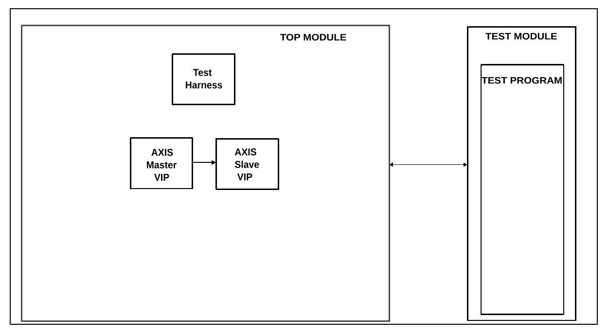

AXIS Sequencers
Overview
The purpose of this testbench is to give engineers a sandbox testbench, where they can test different configuration parameters for the AXI4 Stream VIPs and sequencers.
Block design
The block design is based on the test harness with the addition of two AXI4 Stream VIPs from AMD. This testbench does not require the presence of the test harness, as it can work without it, but since it was created based on the base design, this was inherited. One of the VIPs is configured as master, while the other one is configured as slave. The TLAST and TREADY signals are set to be enabled for the VIPs. TKEEP support for this testbench will be added later. If your desire is to enable/disable other signals in this testbench, you’ll have to modify the block design. Dynamic configuration of these parameters will be added later in the configuration file.
Block diagram


Configuration parameters and modes
The following parameters of this project that can be configured:
SRC_DESCRIPTORS: defines the data generation mode: Options: 1 - single packet, 2 - multiple packets, 3 - repeating packets
SRC_BEAT_DELAY: defines the valid delays between data beats: Integer value
SRC_DESCRIPTOR_DELAY: defines the valid delays between packets: Integer value
DEST_BACKPRESSURE: defines the backpressure type for the slave interface: Options: 1 - backpressure enabled, 2 - no backpressure
DEST_BEAT_DELAY_HIGH: defines the high time of the ready signal: Integer, non-0 value
DEST_BEAT_DELAY_LOW: defines the low time of the ready signal: Integer, non-0 value
Configuration files
As this is a sandbox testbench, engineers are encouraged to change parameters and see what happens in the simulation.
Tests
The following test program file is available:
Test program |
Usage |
|---|---|
test_program |
Creates a basic test stimulus. |
Available configurations & tests combinations
The test program is compatible with the configuration.
CPU/Memory interconnects addresses
Irrelevant for this testbench.
Interrupts
Irrelevant for this testbench.
Test stimulus
The test program is responsible for configuring and running the sequencers.
Environment Bringup
The steps of the environment bringup are:
Create the environment
Start the environment
Start the clocks
Assert the resets
Sequencer testing
Configures the source and destination sequencers’ ready and valid signals uptime and downtime with the parameters set in the configuration file
Configures the data generation part, where the parameters are also read from the same file
A watchdog is initialized, which ensures that the simulation doesn’t run off into infinity
Some of the parameters for the packet sizes are hardcoded, these can be changed to test some more specific use-cases
The watchdog and the sequencers are started at the same time
Stop the environment
Simulation waits for the stop condition, depending on the packet generation mode
Stop the watchdog
Stop the clocks
Danger
Depending on the configuration parameters and/or changed hardcoded values, the watchdog may trigger prematurely!
Building the test bench
The testbench is built upon ADI’s generic HDL reference design framework. ADI does not distribute compiled files of these projects so they must be built from the sources available here and here, with the specified hierarchy described Set up the Testbenches repository. To get the source you must clone the HDL repository, and then build the project as follows:
Linux/Cygwin/WSL
Example 1
Building and simulating the testbench using only the command line.
user@analog:~$
cd testbenches/ip/axis_sequencers
user@analog:~/testbenches/ip/axis_sequencers$
make
Example 2
Building and simulating the testbench using the Vivado GUI. This command will launch Vivado, will run the simulation and display the waveforms.
user@analog:~$
cd testbenches/ip/axis_sequencers
user@analog:~/testbenches/ip/axis_sequencers$
make MODE=gui
Example 3
Build a particular combination of test and configuration, using the Vivado GUI. This command will launch Vivado, will run the simulation and display the waveforms.
user@analog:~$
cd testbenches/ip/axis_sequencers
user@analog:~/testbenches/ip/axis_sequencers$
make MODE=gui CFG=cfg1 TST=test_program
The built project can be found in the runs folder, where each configuration
specific build has its own folder named after the configuration file’s name.
Example: if the following command was run for a single configuration in the
clean folder (no runs folder available):
make CFG=cfg1
Then the subfolder under runs name will be:
cfg1
Resources
More information
Support
Analog Devices, Inc. will provide limited online support for anyone using the reference design with ADI components via the EngineerZone FPGA reference designs forum.
It should be noted, that the older the tools’ versions and release branches are, the lower the chances to receive support from ADI engineers.